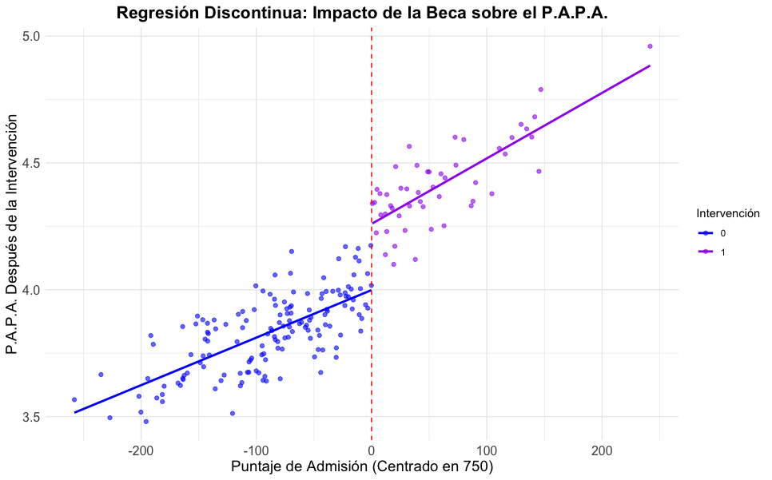
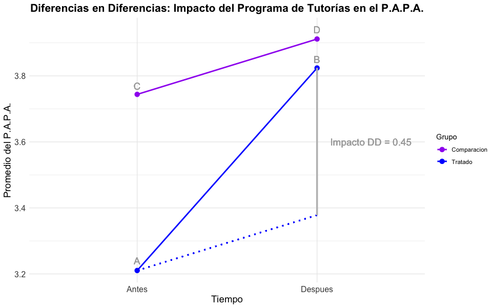

3 Modelos de evaluación de impacto
Hasta ahora, hemos examinado la relevancia de la evaluación de impacto tanto en el ámbito general de la gestión como en el contexto específico de la educación superior. Además, se ha destacado que la causalidad en términos absolutos resulta complicada de abordar en procesos de evaluación e impacto en comunidades. Por ello, es fundamental contar con una serie de pasos estructurados que proporcionen una base sólida para la evaluación y permitan determinar el impacto de manera precisa.
Estos pasos, como se detalló en la sección anterior, incluyen: el establecimiento de un marco conceptual detallado que explique de manera lógica y coherente cómo y por qué se espera que una intervención específica genere los resultados deseados; la formulación de preguntas de evaluación claras y precisas, alineadas con los objetivos específicos de la intervención, para abordar los resultados del plan, programa o proyecto desde una perspectiva de medición; el entendimiento del concepto de indicador, que facilita la definición del tipo de indicador más adecuado y relevante para medir el impacto de la intervención; la recolección, limpieza y transformación de datos para asegurar la calidad y precisión de la información utilizada en el análisis; y la comunicación de resultados, promoviendo la transparencia y accesibilidad de la información para su reutilización por las partes interesadas.
En este contexto, es crucial reconocer que, en función de cómo se plantean y ejecutan las intervenciones y las evaluaciones de impacto, existen diversas metodologías para evaluar el impacto de intervenciones o programas. Cada una de estas metodologías posee características, requisitos, procedimientos y supuestos específicos que deben ser considerados para realizar una evaluación efectiva. La elección de un método adecuado dependerá de los objetivos de la evaluación y de las particularidades del trabajo en comunidades. En esta sección de la guía metodológica, se ofrece una visión general de los principales modelos de evaluación de impacto, destacando sus ventajas y desventajas.
Es importante tener en cuenta que cada modelo es complejo y amplio en sí mismo. Aunque se podría profundizar extensamente en cada uno, el propósito de esta guía es proporcionar una introducción general para facilitar el acceso al campo de la evaluación de impacto. Para quienes deseen explorar más a fondo cada modelo, se incluye una bibliografía complementaria que ofrece información adicional. En este documento, utilizaremos como referencia principal el informe del Banco Interamericano de Desarrollo (BID) titulado La evaluación de impacto en la práctica (Gertler, P., Martínez, S., Rawlings, L. B., Premand, P., & Vermeersch, C. M. J., 2016). Esta obra es ampliamente conocida y recomendada para cualquier persona interesada en el campo de la evaluación de impacto, debido a su enfoque integral y autoridad en la materia.
Así, los modelos de evaluación de impacto se clasifican según el grado de control que el evaluador tiene sobre la asignación de las unidades de estudio a la intervención y la capacidad de aislar efectos causales.
Experimentos Controlados Aleatorios (RCT): Ofrecen el mayor grado de control y la mejor capacidad para establecer relaciones causales debido a la aleatorización.
Métodos Cuasi-experimentales: Proporcionan una fuerte aproximación a la causalidad utilizando técnicas estadísticas para controlar diferencias iniciales entre grupos, aunque no alcanzan el rigor de los RCT.
Métodos No Experimentales: Se basan en observaciones y no manipulan directamente las variables, lo que limita la capacidad para hacer afirmaciones causales firmes, pero son útiles cuando los experimentos no son viables.
3.1 Experimentos controlados aleatorios
La asignación aleatoria es un proceso en el cual se utiliza el azar para decidir quién recibirá el tratamiento y quién no. Este método asegura que todas las unidades elegibles (personas, hogares, empresas, hospitales, escuelas o comunidades) tengan la misma probabilidad de ser seleccionadas para el programa. Las unidades elegibles deben tener una probabilidad igual entre sí y mayor de cero. A continuación, se presentan las principales ventajas, procedimientos y consideraciones de este enfoque.
3.1.1 Ventajas éticas
La asignación aleatoria ofrece ventajas éticas significativas:
Equidad: Asegura que la inclusión o exclusión de la población dentro del programa no sea sesgada.
Transparencia: Facilita un proceso claro y justo, donde todos los participantes potenciales tienen las mismas oportunidades.
3.1.2 Ventajas estadísticas
Asignar unidades de manera aleatoria a los grupos de tratamiento y comparación tiene varios beneficios:
Similitud estadística: La aleatorización se espera que produzca grupos con características basales similares, es decir, variables inherentes a las unidades de observación que pueden llegar a afectar el resultado de la intervención, pero no dependen de ella (por ejemplo sexo y edad), lo que los hace comparables. Esto es importante, ya que permite que los resultados sean atribuibles a la intervención y no a otras variables. Adicionalmente, elimina el sesgo de selección, al evitar que haya una influencia en la decisión de aplicar o no la intervención a una unidad de estudio en particular.
Validez interna: Significa que el impacto estimado del programa es libre de factores de confusión potenciales, es decir, se tiene la confianza de que los resultados de las diferencias lineamientos teóricos y metodológicos.
Validez externa: La muestra de la evaluación representa con precisión a la población de unidades elegibles, permitiendo la generalización de los resultados.
Uso de muestras: Cuando la población es muy grande para realizar un censo, se puede trabajar con una muestra aleatorizada. La muestra debe ser representativa, de tamaño suficiente para garantizar la potencia estadística deseada en la inferencia de acuerdo con los parámetros a estimar, y seleccionada aleatoriamente para asegurar la validez de los resultados.
3.1.3 Pasos para la asignación aleatoria
- Definir unidades elegibles:
Identificar a los individuos que forman la población de unidades elegibles. Estableciendo claramente los criterios de inclusión y exclusión que delimitan la población.
En caso de que no sea posible realizar un censo (como ocurre en la mayoría de los casos), se debe establecer el tamaño de la muestra que será extraída de la población de unidades elegibles. Este se calcula teniendo en cuenta los parámetros a estimar (indicadores), la potencia estadística deseada, y los métodos y pruebas estadísticas a implementar. Adicionalmente, es necesario contar con un marco muestral que permita la identificación de los individuos y el acceso a ellos para recolectar la información.
- Configurar grupos de tratamiento y comparación:
- Asignar aleatoriamente las unidades de la muestra a los grupos de tratamiento y comparación.
- Minimizar riesgos:
Efectos de derrame: Implementar estrategias para evitar que el grupo de tratamiento influya en el grupo de comparación. Ya que, sea voluntaria o involuntariamente, si un individuo intervenido influye de manera positiva o negativa en un individuo no intervenido, esto puede afectar la medición del impacto de la intervención. Un tipo de efecto derrame se puede dar por la interacción social, por ejemplo, cuando un alumno que recibe una Tablet como parte de un programa de mejora del aprendizaje comparte el dispositivo con otro alumno que no participa en el programa. En caso de que sea inevitable que ocurra, debe medirse este efecto para evitar sesgar la medición del impacto del programa.
Cumplimiento imperfecto: Se da cuando algún individuo asignado al tratamiento no lo recibe o algún individuo asignado al grupo de comparación recibe el tratamiento.
3.1.4 Estrategias para minimizar riesgos:
Aislamiento de grupos: Mantener los grupos geográficamente separados cuando sea posible, y en caso de que sea conveniente que no se comuniquen entre sí.
Monitoreo estricto: Implementar sistemas de seguimiento para asegurar el cumplimiento de los participantes de la evaluación, tanto intervenidos como no intervenidos.
3.1.5 Cálculo del impacto del programa (medición)
El impacto de un programa sobre un resultado de interés se puede determinar mediante la diferencia entre el resultado promedio observado en el grupo que ha recibido el tratamiento (\(Y_{tratamiento}\)) y el resultado promedio observado en el grupo de comparación (\(Y_{comparación}\)).
\[ImpactoPrograma = Y_{tratamiento} - Y_{comparación}\]
De acuerdo con Gertler, P., Martínez, S., Rawlings, L. B., Premand, P., & Vermeersch, C. M. J. (2016), a esta medida se le conoce como efecto promedio del tratamiento (Average Treatment Effect ATE). Por supuesto, para que tenga sentido, Y debe ser una variable numérica en escala de razón, sin embargo, no todas las variables son medibles de manera directa. Por ejemplo, la pobreza es una variable que, aunque puede ser evaluada a través de indicadores indirectos, no se mide de manera tangible en el mismo sentido que una nota escolar o un récord deportivo. Por ello, el diseño del instrumento de medición para evaluar el impacto del programa debe ser cuidadosamente considerado. Es fundamental que el instrumento tenga en cuenta tanto las variables directamente medibles como aquellas que requieren métodos indirectos de evaluación para obtener una imagen completa y precisa del impacto del programa.
3.2 Métodos Cuasi-experimentales
El análisis de asignación aleatoria parte de la premisa de que el administrador del programa puede asignar la intervención a los grupos de tratamiento y comparación, asegurando que los asignados al tratamiento participen en el programa y los asignados al grupo de comparación no lo hagan. Este cumplimiento pleno es común en entornos controlados, como pruebas de laboratorio o ensayos clínicos. Sin embargo, en los programas sociales del mundo real, el cumplimiento pleno es poco realista debido a la inscripción voluntaria y a la incapacidad de excluir a participantes potenciales, lo cual presenta un dilema ético al dejar fuera a quienes posiblemente necesiten la intervención.
3.2.1 Variables Instrumentales (VI)
El método de variables instrumentales (VI) es útil para evaluar programas con cumplimiento imperfecto, inscripción voluntaria o cobertura universal. Este método permite determinar el impacto de la intervención a través del efecto promedio del tratamiento en la población. Cuando la participación en una intervención no es controlada y perfecta, se evalúa el impacto estimando, por un lado, el efecto de ofrecer un programa y, por otro, el efecto de participar en él. Aquí surgen los conceptos de ITT y TOT.
3.2.1.1 ¿Qué son las Variables Instrumentales?
Cuando hablamos de un modelo de regresión múltiple, deben cumplirse ciertos supuestos: \[Y_i = \beta_0+ \beta_1X_i+ \epsilon_i\]
El valor esperado del error aleatorio es cero: \(E(Y_i) = 0\)
La varianza del error es constante, en particular, no está relacionada con la variable explicativa \(X\): \(Var(Y_i) = \sigma^2\)
Para cualquier par de individuos \(i, j\), los errores no están correlacionados y por ende la variable respuesta \(Y\) tampoco: \(Cov(\epsilon_i,\epsilon_j) = Cov(Y_i,Y_j) = 0\)
De acuerdo con, Cunningham (2021), en este modelo, \(\beta_1\) representa el ATE. Sin embargo, cuando la variable explicativa \(X\) está correlacionada con el error \(\epsilon\)(a esto se le conoce como endogeneidad), se producen estimaciones sesgadas y conduce a conclusiones incorrectas. Es aquí en donde entran las variables instrumentales, las cuales son variables que están correlacionadas con la variable explicativa pero no están correlacionadas con el error y no tienen un efecto directo sobre la variable respuesta. Por ejemplo, siguiente a, Aguilar Estevan & López Ramírez (s.f.) supongamos que queremos estimar el efecto de la educación sobre los ingresos, un instrumento podría ser la educación de los padres, ya que está relacionado con la educación del individuo pero no con los ingresos directamente.
3.2.1.2 Intención de Tratar (ITT)
La ITT es un promedio ponderado de los resultados de los participantes y no participantes en el grupo de tratamiento versus el resultado promedio del grupo de comparación. Este enfoque es útil cuando se desea determinar el impacto promedio de ofrecer un programa, independientemente de si los individuos deciden participar o no.
3.2.1.3 Tratamiento en los Tratados (TOT)
El TOT, por otro lado, se refiere al impacto del programa en el grupo de individuos que realmente participan en él. La ITT y el TOT serán iguales cuando haya cumplimiento perfecto. Sin embargo, el impacto TOT no puede extrapolarse a la población de ITT que decide no participar en el programa. Esto se debe a que los individuos que participan en un programa cuando se les ofrece pueden ser diferentes de aquellos a quienes se les ofrece pero deciden no inscribirse. Por lo tanto, los efectos del tratamiento “local” no pueden extrapolarse directamente de un grupo a otro.
3.2.1.4 Variables Instrumentales en cumplimiento imperfecto
El método de variables instrumentales (VI) es crucial para estimar el impacto cuando hay cumplimiento imperfecto en una metodología de asignación aleatoria. En tales casos, la estimación del impacto basada únicamente en los resultados del grupo de tratamiento y del grupo de control no es efectiva, ya que el incumplimiento distorsiona los resultados.
Además, la estimación de la Intención de Tratar (ITT) puede no ser suficiente o apropiada para los objetivos de una intervención. Por ejemplo, un subgrupo del grupo de control puede estar tan interesado y motivado en el programa que consiga formar parte de él, elevando la media de resultados en este grupo y reduciendo así la diferencia entre los grupos de control y tratamiento.
En este contexto, el efecto local promedio del tratamiento (Local Average Treatment Effect LATE) se vuelve relevante. El LATE estima el impacto en el subgrupo de cumplidores, es decir, aquellos que cumplen con la asignación original del tratamiento o del control, proporcionando una medida más precisa del efecto de la intervención en aquellos que realmente participan según lo previsto.
LATE:
Es una medida que se utiliza en evaluaciones de impacto para entender el efecto de un programa en aquellos que cumplen con su asignación, especialmente cuando el cumplimiento no es perfecto. En este caso, la variable instrumental es la asignación aleatoria.
Pasos para Calcular el LATE
- Identificar Grupos:
- Tratamiento Asignado (T): Aquellos a quienes se les ha asignado recibir el tratamiento.
- Comparación Asignado (C): Aquellos a quienes se les ha asignado no recibir el tratamiento.
- Tratamiento Recibido (D): Aquellos que efectivamente reciben el tratamiento.
- No Tratamiento (NT): Aquellos que no reciben el tratamiento.
- Definir Variables:
- Z: Indicador de asignación (1 si fue asignado al tratamiento, 0 si no).
- D: Indicador de tratamiento recibido (1 si recibió el tratamiento, 0 si no).
- Y: Resultado observado.
- Cálculo de Probabilidades:
- \(P(D=1|Z=1)\): Probabilidad de recibir el tratamiento dado que fue asignado al tratamiento.
- \(P(D=1|Z=0)\): Probabilidad de recibir el tratamiento dado que fue asignado al grupo de comparación (esto puede no ser cero si hay incumplimiento).
- Efecto del Tratamiento en el Tratamiento Recibido:
Calcula la diferencia en las probabilidades: \[P(D=1|Z=1)-P(D=1|Z=0)\]
- Diferencia de Resultados Promedios:
- \(\hat{E}[Y|Z=1]\):Promedio del resultado en el grupo de tratamiento asignado.
- \(\hat{E}[Y|Z=0]\):Promedio del resultado en el grupo de comparación asignado.
Calcula la diferencia en los resultados promedios: \(\hat{E}[Y|Z=1] - \hat{E}[Y|Z=0]\)
- Calcular el LATE:
El LATE se calcula dividiendo la diferencia de resultados promedios entre los grupos asignados por la diferencia en las probabilidades de recibir el tratamiento
Fórmula poblacional: \[LATE = \frac{E[Y∣Z=1]- E[Y∣Z=0]}{E[D∣Z=1]-E[D∣Z=0]}\] Estimación: \[\widehat{LATE} = \frac{\hat{E}[Y∣Z=1]- \hat{E}[Y∣Z=0]}{P[D=1∣Z=1]-P[D=0∣Z=0]}\]
El LATE es el efecto promedio sobre la variable o indicador (Y) de recibir el tratamiento (D) en aquellos individuos que fueron asignados al tratamiento.
Ejemplo Práctico
Supongamos un programa educativo en el que se asigna aleatoriamente a algunos estudiantes a un grupo que recibe tutorías (grupo de tratamiento) y a otros a un grupo que no las recibe (grupo de comparación). Sin embargo, no todos los estudiantes asignados a las tutorías las toman, y algunos del grupo de comparación logran recibir tutorías por otras vías.
- Datos de la Asignación y Cumplimiento:
- 80% de los asignados al tratamiento efectivamente reciben tutorías.
- 10% de los asignados al grupo de comparación reciben tutorías por otras vías.
- Datos de Resultados:
- Promedio de notas de los estudiantes asignados a tutorías: 75 puntos.
- Promedio de notas de los estudiantes asignados a no recibir tutorías: 70 puntos.
- Cálculo de Probabilidades:
\[P(D=1|Z=1)=0.8\] \[P(D=1|Z=0)=0.1\] \[P(D=1|Z=1)-P(D=1|Z=0) =0.8-0.1=0.7\]
- Cálculo de Diferencia de Resultados:
\[\hat{E}[Y|Z=1]=75\] \[\hat{E}[Y|Z=0]=70\] \[\hat{E}[Y|Z=1] - \hat{E}[Y|Z=0]=75−70=5\]
- Cálculo del LATE:
\[LATE=\frac{5}{0.7}\approx7.14\]
El efecto promedio de recibir tutorías sobre las notas de los estudiantes que fueron asignados a recibirlas es de 7.14 puntos.
3.2.1.5 Variables Instrumentales en promoción aleatoria:
La promoción aleatoria como variable instrumental es una técnica utilizada en evaluaciones de impacto para manejar problemas de cumplimiento imperfecto y sesgo de selección en programas con inscripción voluntaria.
Diseñar la Campaña de Promoción:
- Crear una campaña de promoción que pueda ser asignada aleatoriamente a los participantes potenciales.
- La campaña puede incluir materiales informativos, incentivos, visitas a domicilio, llamadas telefónicas, etc.
Asignación Aleatoria de la Promoción:
- Aleatoriamente, asignar la promoción a ciertos individuos o grupos (p. ej., barrios, escuelas).
- Asegurar que la asignación sea verdaderamente aleatoria para que actúe como una VI válida.
Recolectar Datos:
- Variable de Tratamiento (D): Indicador de si el individuo participa en el programa (1 si participa, 0 si no).
- Resultado (Y): El resultado de interés que se quiere medir (por ejemplo, notas escolares, ingresos, salud).
- Promoción (Z): Indicador de si el individuo recibió la promoción (1 si recibió, 0 si no).
Estimación del Impacto Utilizando la VI:
- Primera Etapa: Modelo de regresión lineal del tratamiento (\(D\)) sobre la promoción (\(Z\)): \[D_i = \alpha + \beta Z_i + \epsilon_i\]
Con \(D_i\) la variable de tratamiento para el individuo \(i\), \(\alpha\) el intercepto,\(\beta\) el coeficiente asociado a la variable de promoción \(Z\) y \(\epsilon_i\) el error aleatorio. Donde \(i=1,...,n\), es el número de individuos.
Cabe resaltar que \(\beta\) es el parámetro de interés, ya que captura el efecto de la promoción en la participación en el programa. Para estimarlo se pueden emplear diversos métodos, los más comunes son MCO y máxima verosimilitud. En softwares estadísticos como R, o incluso en excel se encuentran funciones ya programadas para realizar la estimación, verificar los supuestos del modelo (independencia de los individuos, homocedasticidad, normalidad) y comprobar que el coeficiente resulte estadísticamente significativo de acuerdo a las pruebas de hipótesis.
- Segunda Etapa: Usar los valores predichos de la participación (\(D_i\)) para estimar el impacto del tratamiento sobre el resultado (\(Y\)): \[Y_i = \gamma + \delta \hat{D}_i + \eta_i\]
Con \(Y_i\) la variable el resultado de interés para el individuo \(i\), \(\gamma\) el intercepto, \(\eta_i\) el error aleatorio; y \(\delta\) el coeficiente asociado al valor predicho del modelo en la primera etapa, el cual representa el LATE, es decir, el efecto causal del programa en aquellos inducidos a participar por la promoción. Nuevamente es importante cumplir con la rigurosidad estadística anteriormente mencionada.
Ejemplo Práctico
Supongamos que se está evaluando un programa de salud que ofrece revisiones médicas gratuitas. Queremos entender el impacto de estas revisiones en la salud general de la población, pero la inscripción es voluntaria y el cumplimiento es imperfecto.
- Diseñar la Promoción:
Se crea una campaña de promoción con información sobre los beneficios de las revisiones médicas, y se ofrecen incentivos como la transportación gratuita al centro médico.
- Asignación Aleatoria:
Se asigna aleatoriamente la campaña de promoción a ciertos barrios de una ciudad.
- Recolectar Datos:
Se recolectan datos sobre quién recibió la promoción (Z), quién efectivamente asistió a las revisiones médicas (D) y los resultados de salud (Y).
Estimación:
- Primera Etapa: Se estima el efecto de la promoción en la participación en las revisiones médicas: \[\hat{D}_i = \hat{\alpha} + \hat{\beta} Z_i\]
Si \(\beta\) es estadísticamente significativo, es decir, se rechaza la hipótesis nula de la prueba de hipótesis asociada (\(H_0: \beta=0 , H_1: \beta \neq 0\)) 1, indica que la promoción afectó la participación.
- Segunda Etapa: Se usa la participación predicha (\(\hat{D}_i\)) para estimar el impacto en los resultados de salud: \[\hat{Y}_i = \hat{\gamma} + \hat{\delta} \hat{D}_i\]
Cuando resulta significativo, el coeficiente \(\hat{\delta}\), representa el LATE, es decir, el impacto de las revisiones médicas en aquellos inducidos a participar por la promoción.
3.2.2 Diseño de regresión discontinua
El Diseño de Regresión Discontinua (DRD) es un método para evaluar el impacto de programas que utilizan un criterio continuo determinístico de elegibilidad con un umbral claro. Este umbral decide quién es elegible para el programa y quién no (como el puntaje de admisión a la UNAL). Para aplicar un DRD, deben cumplirse las siguientes condiciones:
Índice Continuo:
- Debe existir un índice que clasifique a las personas de forma continua, como un índice de pobreza, puntuaciones en pruebas estandarizadas, o edad.
- No se pueden usar variables con categorías discretas (sin valores entre los consecutivos), como condición laboral (empleado/desempleado) o nivel educativo.
Puntuación Límite Clara:
- Debe haber una puntuación límite definida que determine la elegibilidad.
- Ejemplos: Hogares con un índice de pobreza ≤ 50 son elegibles, personas mayores de 67 años son elegibles para jubilación, alumnos con una puntuación > 90 en un examen son elegibles para una beca. (Los límites de la división son imperfectos)
Puntuación Límite Única:
- La puntuación límite debe ser única para el programa evaluado.
Inalterabilidad de la Puntuación:
- La puntuación de un individuo no debe ser manipulada por encuestadores, beneficiarios potenciales, administradores del programa, o políticos.
El DRD estima el impacto del programa comparando el resultado promedio de las unidades justo por encima y justo por debajo de la puntuación límite de elegibilidad. Básicamente, mide la diferencia en resultados entre aquellos que están justo en el lado tratado del umbral y aquellos en el lado no tratado. A continuación, se describen consideraciones importantes.
Generalización Limitada
- El DRD estima el impacto del programa localmente, cerca del umbral de elegibilidad.
- Esta estimación no se puede generalizar a unidades con puntuaciones alejadas del umbral, donde las diferencias entre elegibles y no elegibles pueden ser mayores.
- El DRD es útil para preguntas de política específicas, como si se debe expandir o suspender un programa, pero no para determinar el impacto promedio en toda la población.
Cumplimiento Imperfecto
- Cuando hay incumplimiento en los grupos de tratamiento o control, se utiliza el DRD difuso.
- En estos casos, se aplica una metodología de variables instrumentales, usando la proximidad al umbral como una variable instrumental para la participación observada.
- Esto solo estima el impacto en aquellos “sensibles” al criterio de elegibilidad, no en todos los participantes.
Potencia Estadística
- El análisis se limita a observaciones cercanas al umbral, reduciendo el número de observaciones y, por ende, la potencia estadística.
- Se debe usar un ancho de banda adecuado alrededor del umbral para incluir suficientes observaciones, manteniendo el equilibrio en las características observadas.
Forma Funcional
- La relación entre la puntuación de elegibilidad y el resultado puede ser compleja y no lineal.
- Se deben probar diversas formas funcionales (lineales, cuadráticas, cúbicas, etc.) para asegurar que las estimaciones no sean sensibles a la forma funcional elegida.
Condiciones de Elegibilidad y Umbral
- La regla de elegibilidad y el umbral deben ser únicos para el programa evaluado, no compartidos con otros programas.
- Deben ser resistentes a la manipulación por parte de encuestadores, beneficiarios potenciales, administradores del programa o políticos.
Ejemplo práctico
Supongamos que un programa de becas se asigna a estudiantes que obtienen 750 puntos o más en el examen de admisión a la UNAL, y se quiere evaluar el impacto de este programa sobre el promedio aritmético ponderado acumulado (P.A.P.A.) de los estudiantes.
- Recolectar los datos:
- Puntaje del examen de admisión (X)
- P.A.P.A. (Y)
- Variable tratamiento (D): 1 si recibió la beca (X > 750), 0 si no (X 750).
- Ajustar el modelo de regresión discontinua:
\[Y_i= \alpha + \beta(X_i-750)+ \rho D_i + \gamma D_i (X_i-750) + \epsilon_i\]
Con \(Y_i\) el P.A.P.A. de admisión del individuo \(i\), \(\alpha\) el intercepto,\(\beta\) el coeficiente asociado al puntaje del examen de admisión centrado en el umbral,\(\gamma\) el coeficiente asociado a la interacción entre la variable tratamiento y el puntaje centrado,\(\epsilon_i\) el error aleatorio, y \(\rho\) el coeficiente asociado a la variable tratamiento, que representa el LATE. Gráficamente, el impacto se observa en la diferencia de las líneas de regresión a cada lado del umbral.

En este caso \(\hat{\rho}=0.26\), es decir, que el efecto de la beca sobre el P.A.P.A. es en promedio de 0.26 puntos en un entorno cercano al umbral.
3.2.3 Diferencias en diferencias
Cuando las reglas de asignación no son claras, el método de Diferencias en Diferencias (DiD) ofrece una alternativa robusta para la evaluación de impacto. Este método, aunque requiere supuestos más fuertes que otros métodos como la asignación aleatoria, variables instrumentales o regresión discontinua, proporciona una manera efectiva de estimar el efecto contrafactual.
El enfoque de DiD combina comparaciones antes-después y comparaciones entre quienes participan y no participan en el programa, para generar una estimación más precisa del contrafactual. En otras palabras, mide el impacto del programa observando los cambios en los resultados tanto en el grupo de tratamiento como en el grupo de comparación, antes y después de la intervención.
3.2.3.1 Aplicación del método
Para aplicar DiD, se deben seguir estos pasos:
Medir los resultados antes del programa: Recopilar datos sobre los resultados del grupo de tratamiento y el grupo de comparación antes de la implementación del programa.
Medir los resultados después del programa: Recopilar datos sobre los resultados de ambos grupos después de la implementación del programa.
Comparar cambios en los resultados: Analizar las diferencias en los cambios de resultados entre el grupo de tratamiento y el grupo de comparación. Este enfoque controla, como lo señalan Gertler, P., Martínez, S., Rawlings, L. B., Premand, P., & Vermeersch, C. M. J. (2016), tanto por características observables invariables en el tiempo (por ejemplo, sexo y año de nacimiento), como por características no observables invariables en el tiempo, ya que al calcular la diferencia entre antes y después del programa dentro de los grupos, se trata de los mismos individuos y por esto se anulan dichas características.
3.2.3.2 Ventajas del método
Control de Variables: DiD anula el efecto de características observables y no observables que no cambian con el tiempo, proporcionando una estimación más precisa del impacto del programa.
Aplicabilidad: Es útil en situaciones donde no es posible tener una asignación clara o cuando hay incumplimiento en la participación de los grupos de tratamiento y comparación.
3.2.3.3 Supuesto de “Tendencias Iguales”
El método de Diferencias en Diferencias (DiD) permite controlar por diferencias constantes en el tiempo entre los grupos de tratamiento y comparación. Sin embargo, no elimina diferencias entre estos grupos que cambian con el tiempo.
Por ejemplo, si una zona tratada con un programa de reparación de carreteras también se beneficia de la construcción de un puerto, el efecto de la reparación no se puede separar del puerto usando DiD. Para una estimación válida, se debe suponer que no existen diferencias temporales entre los grupos que afecten los resultados. En otras palabras, sin el tratamiento, los resultados deben evolucionar de forma paralela en ambos grupos.
Verificación del Supuesto de Tendencias Iguales
- Comprobación de Tendencias Históricas:
- Contrastar los cambios en los resultados de los grupos de tratamiento y comparación en múltiples momentos antes del programa.
- Si las tendencias eran paralelas antes del programa, es razonable suponer que continuarían así sin la intervención.
- Requiere al menos dos rondas de observaciones: una antes del programa y una después.
- Pruebas de Placebo:
- Grupo de Tratamiento Falso: Usar un grupo no afectado por el programa como grupo de tratamiento falso para verificar la validez del grupo de comparación. Si la prueba encuentra un impacto, indica diferencias fundamentales en las tendencias.
- Resultado Falso: Verificar con un resultado que no debería ser afectado por el programa (ejemplo: número de hermanos en un estudio de clases de apoyo). Un impacto en el resultado falso sugiere problemas en el grupo de comparación.
- Comparación con Múltiples Grupos de Comparación:
- Realizar estimaciones usando diferentes grupos de comparación.
- Si ambos grupos son válidos, el impacto estimado debería ser similar en ambos cálculos.
3.2.3.4 Limitaciones del Método de Diferencias en Diferencias
Factores de confusión:
- Incluso si las tendencias son iguales antes de la intervención, otros factores que afectan desproporcionadamente a uno de los grupos pueden sesgar la estimación.
- Ejemplo: una sequía que afecta solo al grupo de tratamiento durante el estudio invalidaría la estimación del impacto del programa.
Supuestos Fuertes:
- El método DiD asume que no hay otros factores presentes que influyan en las diferencias de tendencias entre los grupos durante la intervención.
- Cualquier factor no controlado que afecte a uno de los grupos puede sesgar la estimación.
Ejemplo práctico
Se implementa un programa de tutorías y se quiere evaluar su impacto sobre el rendimiento de los estudiantes a través de su promedio aritmético ponderado acumulado, suponiendo que se cumple el supuesto de tendencias iguales.
Impacto DD = (Promedio PAPA en el grupo tratamiento después - Promedio PAPA en el grupo tratamiento antes) - (Promedio PAPA en el grupo comparación después - Promedio PAPA en el grupo comparación antes) = (B-A) - (D-C)

Por lo tanto, el impacto del programa de tutorías en los estudiantes fue de 0.45 puntos sobre su P.A.P.A.
3.2.4 Método de Pareamiento
El método de pareamiento (matching) utiliza técnicas estadísticas para construir un grupo de comparación que se asemeje lo más posible a un grupo de tratamiento en un programa. Se puede aplicar a casi cualquier regla de asignación, siempre y cuando se cuente con grupo no intervenido y se hayan observado otras características en la línea base que permitan el pareamiento, con el fin de evaluar el impacto del programa.
Para evaluar el impacto de un programa de capacitación laboral, por ejemplo, se puede usar una base de datos que incluya tanto a individuos que participaron en el programa como a los que no lo hicieron. El pareamiento permite identificar un grupo de comparación entre los no inscritos que se asemejan a los inscritos en cuanto a características observables, como edad, sexo y educación. Este grupo de comparación se utiliza para estimar el contrafactual.
3.2.4.1 Pareamiento por Puntajes de Propensión
El pareamiento por puntajes de propensión (propensity score matching) simplifica el proceso al estimar la probabilidad de que un individuo reciba el tratamiento, basada en características observables. Este puntaje de propensión es un número entre 0 y 1 que resume la influencia de todas las características observables en la probabilidad de recibir el tratamiento. Es decir, que en lugar de tener múltiples variables asociadas a cada individuo, lo cual hace que sea difícil emparejarlos, se construye un único valor por individuo.
Proceso de Pareamiento
Cálculo del Puntaje de Propensión: Estimar la probabilidad de recibir el tratamiento para cada individuo utilizando características observables. Esto se puede realizar de diversas maneras, una de las más utilizadas es la regresión logística empleando como la variable respuesta el tratamiento (1 si recibe el tratamiento, 0 si no lo recibe) y como covariables las características observadas en la línea base.
Rango Común: Verificar que la distribución de los puntajes de propensión en el grupo tratamiento y en el grupo de comparación se superpongan. En caso de que no ocurra, se estima el LATE sobre el rango común.
Pareamiento: Parear cada unidad de tratamiento con unidades no tratadas con puntajes de propensión similares.
Comparación de Resultados: Comparar los resultados de los grupos de tratamiento y comparación para estimar el impacto del programa.
3.2.4.2 Limitaciones del Método de Pareamiento
- Uso de Características Observables
El pareamiento solo puede utilizar características observables. Si hay características no observables que influyen tanto en la participación en el programa como en los resultados, las estimaciones del impacto pueden estar sesgadas.
- Características Afectadas por el Programa
El pareamiento debe basarse en características que no hayan sido afectadas por el programa. Esto generalmente requiere datos de línea de base (antes de la intervención). Si solo se disponen de datos posteriores a la intervención, el pareamiento puede no ser adecuado.
- Calidad del Pareamiento
Los resultados del pareamiento dependen de la calidad y relevancia de las características utilizadas. Es crucial comprender los criterios de selección de los participantes para construir un grupo de comparación adecuado. Adicionalmente, se puede presentar pérdida de información si no se asocian todos los individuos en el pareamiento.
Cabe resaltar que es posible combinar el pareamiento con otros métodos como el de diferencias en diferencias para lograr evaluar de la manera más acertada posible el impacto del programa.
3.3 Métodos No Experimentales
En la evaluación de impacto, los métodos no experimentales se utilizan para estimar los efectos de una intervención cuando los diseños experimentales o cuasi-experimentales no son viables. Estos métodos buscan corregir el sesgo de selección generado por un proceso de selección de la muestra no aleatorio y permiten estimar el impacto de un programa, es decir, inferir causalidad.
3.3.1 Estimador de Selección de Heckman
Cuando la selección de la muestra no es aleatoria, los enfoques no experimentales, dice Heckman, J. J. (1979), pueden sufrir sesgos significativos, por ejemplo, puede ocurrir cuando ciertos individuos son más o menos propensos a ser incluidos en la muestra basada en características observables o no observables. El Estimador de selección de Heckman ofrece una solución a este problema al corregir el sesgo de selección en los datos. Mediante un enfoque en dos etapas, primero estima la probabilidad de inclusión en la muestra y luego ajusta el modelo principal para tener en cuenta las posibles distorsiones, proporcionando estimaciones válidas de los efectos de la intervención.
Al momento de buscar estimadores para una evaluación, se debe tener en cuenta el grado de robustez respecto a sesgos de este, ya que, partiendo de modelos no experimentales, se debe tener especial cuidado con la validez y consistencia de los estimadores para poder confiar en los resultados. Heckman muestra que el sesgo de selección es, en esencia, un error en la especificación del modelo por lo cual un método tradicional como MCO no sería adecuado, entonces propone un método de corrección en dos etapas que se presentan a continuación.
Motivación
Sea \(Y_{1i}\) el resultado de interés con \(i\) variando desde 1 hasta el número de individuos (\(I\)), \(Y_{2i}\) la variable que especifica si un individuo está en la muestra, \(X_{1i}\) y \(X_{2i}\) las matrices de diseño de cada modelo respectivamente (pueden tener variables en común), \(\beta_1\) y \(\beta_2\) los vectores de coeficientes, \(U_{1i}\) y \(U_{2i}\) los errores aleatorios normales de media 0.
\[Y_{1i}= X_{1i}\beta_1+U_{1i} \quad \rightarrow \quad \text{Regresión original}\] \[Y_{2i}= X_{2i}\beta_2+U_{2i} \quad \rightarrow \quad \text{Criterio de selección}\]
Cuando se realiza una asignación aleatoria \(E(U_{ji},U_{j'i'}) = \sigma_{jj'}\) si \(i=i'\), ó \(E(U_{ji},U_{j'i'}) = 0\) si \(i\neq i'\), entonces el modelo queda especificado como \(E(Y_{1i}|X_{1i})=X_{1i}\beta_1\). Sin embargo, si faltan ciertas observaciones de \(Y_1\) debido al criterio de selección de la muestra, el modelo es:
\[E(Y_{1i}|X_{1i}, \text{criterio de selección})=X_{1i}\beta_1+E(U_{1i}|\text{criterio de selección})\]
Suponiendo que hay datos disponibles de \(Y_1\) si \(Y_{2i} \geq 0\), mientras que si \(Y_{2i} < 0\) no hay observaciones de \(Y_1\), se tiene que:
\[E(U_{1i}|\text{criterio de selección})=E(U_{1i}|Y_{2i}\geq 0)=E(U_{1i}|U_{2i}\geq-X_{2i}\beta_2)\]
En el caso de que \(U_{1i}\) y \(U_{2i}\) sean independientes, el valor esperado anterior es 0, sin embargo, al haber un sesgo de selección no se cumple la independencia. La correlación entre los términos del error es \(\rho=\frac{\sigma_{12}}{\sqrt{\sigma_{11}\sigma_{22}}}\).
Estimación
- Primera etapa: Estimar la ecuación de selección
Suponiendo que la distribución conjunta de \(U_{1i}\) y \(U_{2i}\) es normal bivariada (aunque podría ser otra), se tiene que:
\[E(U_{1i}|U_{2i}\geq-X_{2i}\beta_2)=\frac{\sigma_{12}}{\sqrt{\sigma_{22}}}\lambda_i\] \[\lambda_i=\frac{\phi(Z_i)}{1-\Phi(Z_i)}=\frac{\phi(Z_i)}{\Phi(-Z_i)} \quad \text{ conocido como el inverso de Mills}\]
Con \(\phi(Z_i)\) la función de densidad y \(\Phi(Z_i)\) la función de distribución acumulada de \(Z_i=-\frac{X_{2i}\beta_2}{\sqrt{\sigma_{22}}}\).
\(\lambda_i\) se puede estimar mediante un modelo probit siempre que \(Y_{2i}\) sea observable 2:
\[P(Y_{2i}=1|X_{2i}) = \Phi(X_{2i}\beta_2)\]
- Segunda etapa: Estimar el impacto corrigiendo el sesgo de selección, según Heckman (2012).
La ecuación de resultado ahora se ajusta incluyendo el Inverso de Mills como un término adicional:
\[Y_{1i}= X_{1i}\beta_1+ \rho\sqrt{\sigma_{11}}\lambda_i + V_{1i}\]
\(\rho\sqrt{\sigma_{11}}\) mide el grado y la dirección del sesgo de selección, y \(V_{1i}\) es el error aleatorio (diferente a \(U_{1i}\)). Este modelo se puede estimar de diversas maneras, las más comunes son MCO y máxima verosimilitud.
Nota: Este procedimiento es válido para tamaños de muestra grandes, ya que las propiedades teóricas han sido demostradas asintóticamente.
Ejemplo práctico
Se desea medir el impacto del tiempo dedicado al hogar en la participación laboral de las mujeres. Se tienen datos disponibles acerca del uso del tiempo a partir de una encuesta realizada a las personas que no tuvo en cuenta la situación laboral de las personas para escoger la muestra, por lo cual existe un sesgo de selección.
Para abordar esto, se emplea el modelo de selección de Heckman (1974). En la primera etapa se estima la probabilidad de que una mujer decida participar en el mercado laboral, dadas ciertas características (como edad, educación, número de hijos, estado civil), y se obtiene el inverso de Mills. En una segunda etapa, se incorpora en el modelo como variable explicativa además de: ingreso, trabajo no pago en casa, número de hijos, adultos mayores a su cuidado y edad. La variable respuesta corresponde al número de horas trabajadas.
A partir del modelo, se pudo concluir que las actividades no remuneradas desempeñadas tradicionalmente por las mujeres limitan su incorporación al mercado laboral significativamente.
3.4 Resumen
La tabla presentada ofrece una visión general de diversos métodos empleados para evaluar el impacto de intervenciones o tratamientos, subrayando su uso, ventajas y desventajas. Cada uno de estos métodos posee fortalezas y limitaciones inherentes, y la elección del enfoque más adecuado debe basarse en las características específicas del estudio y en los datos disponibles.
| Método | Uso | Ventajas | Desventajas |
|---|---|---|---|
| Experimentos controlados aleatorios | - Estimar el efecto causal directo cuando es factible la asignación aleatoria del tratamiento. | - Alta validez interna. - Permite atribuir causalidad. - Posibilidad de extrapolar. - Resultados replicables. - Control de sesgos. |
- Cuestiones éticas. - La logística puede ser compleja y los costos altos. - Garantizar la aleatorización puede ser difícil. |
| Diferencias en diferencias | - Evaluar impacto en programas donde existen datos de antes y después del tratamiento. | - Controla factores constantes en el tiempo. - Útil cuando no es posible la aleatorización. |
- Supone que las tendencias serán paralelas sin intervención. - Sensible a cambios externos. |
| Diseño de Regresión Discontinua | - Estimar impacto cuando hay un punto de corte claro para recibir el tratamiento. | - Alta validez interna en torno al punto de corte. - Permite inferencias causales locales. |
- Solo válido cerca del punto de corte. - Requiere muchas observaciones cercanas al umbral. - Posible manipulación del umbral. |
| Empareamiento | - Comparar impacto creando un grupo de control con características similares al grupo tratado. | - Reduce el sesgo de selección al equilibrar grupos. - No requiere aleatorización completa. |
- Difícil encontrar pareo perfecto. - No controla factores no observables que influyen en el tratamiento. |
| Variables Instrumentales | - Medir el impacto controlando por variables endógenas (relación causal bidireccional o factores no observados). | - Permite estimar relaciones causales cuando el tratamiento está correlacionado con factores no observables. - Útil cuando no es posible la asignación aleatoria. |
- Difícil encontrar un buen instrumento (debe estar correlacionado con el tratamiento y no con el resultado). - Puede dar estimaciones poco precisas si el instrumento es débil. |
| Estimador de Selección de Heckman | - Corregir el sesgo de selección en análisis de impacto donde existe auto-selección, o una muestra seleccionada arbitrariamente. | - Útil cuando el acceso al tratamiento depende de decisiones individuales o auto-selección. | - Sensible a errores o violación de supuestos en los modelos de selección y resultado. - Se requiere estimar la probabilidad de que el resultado sea medido. - No es confiable con tamaños de muestra pequeños. |
3.5 Ejemplos adicionales
Como complemento a lo desarrollado en esta sección, se considera pertinente incluir un resumen de los ejemplos presentados en la Guía Metodológica para la Elaboración de Evaluaciones de Resultado e Impacto de Programas de Apoyo Académico elaborada por la Universidad Nacional de Colombia. Este resumen tiene como objetivo resaltar tanto el valor como la pertinencia de la búsqueda, el análisis y la síntesis de esa información contenida en dicha guía. A través de estos ejemplos, se busca proporcionar al lector una comprensión más clara sobre las metodologías utilizadas para evaluar el impacto de programas académicos, facilitando su aplicación y adaptabilidad en el contexto universitario.
A continuación, se presenta una versión sintetizada y sistematizada de los ejemplos contenidos en la guía en cuestión. Estos ejemplos han sido organizados en un cuadro para facilitar su consulta y para que el lector pueda hacer uso de ellos de manera eficiente, ya sea para el diseño de nuevas evaluaciones o para la comprensión a través de intervenciones previas.
| Tipo de EI | Descripción | Cita |
|---|---|---|
| Ensayo Aleatorio Controlado (EAC) | El programa Computadores para educar, creado en 2002 por el Ministerio de Educación de Colombia, tenía como objetivo instalar computadores donados por el sector privado en escuelas públicas. Barrera-Osorio et al. (2009) evaluaron su impacto utilizando un EAC por conglomerados con 97 escuelas y 5201 estudiantes. Los resultados indicaron que el programa tuvo un efecto limitado en los resultados académicos debido a la falta de integración efectiva de la tecnología en el proceso educativo. | Barrera-Osorio, F., & Linden, L. L. (2009). The use and misuse of computers in education: evidence from a randomized experiment in Colombia. World Bank Policy Research Working Paper, (4836). |
| Regresión Discontinua (RD) | El programa ACCES, de créditos subsidiados para estudiantes de bajos ingresos, comenzó en 2002 en Colombia. Melguizo et al. (2016) evaluaron su impacto utilizando un diseño de regresión discontinua, aprovechando los umbrales definidos por puntajes del examen de Estado y departamento de residencia. Los resultados mostraron un impacto positivo sobre las tasas de inscripción, descenso en rendimiento académico, y acceso a estudiantes de bajos ingresos. | Melguizo, T., Sanchez, F., & Velasco, T. (2016). Credit for low-income students and access to and academic performance in higher education in Colombia: A regression discontinuity approach. World Development, 80, 61–77. |
| Métodos de Emparejamiento (Propensity Score Matching) | La Universidad Nacional de Colombia (2021) evaluó el impacto de los Grupos de Estudio Autónomos (GEA) en la probabilidad de continuar el período académico en la universidad. Tras controlar por variables como sexo, puntaje PBM y tipo de colegio, los resultados indicaron que la asistencia a los GEA tuvo un efecto positivo, especialmente en mujeres y estudiantes fuera del departamento de Antioquia. No obstante, el efecto sobre el rendimiento académico (PAPA) fue inconsistente. | Universidad Nacional de Colombia. (2021). Evaluación de impacto y resultado de los Grupos de Estudio Autónomos (GEA), Sede Medellín. |
| Métodos de Emparejamiento (Propensity Score Matching) | Soler et al. (2021) estudiaron el impacto de la repetición de grado sobre el desempeño académico de estudiantes de noveno grado en Colombia. Usaron métodos de emparejamiento para formar grupos comparables y encontraron que la repetición afectó negativamente el rendimiento en matemáticas y lengua, aunque para las estudiantes femeninas se observó un efecto positivo en el lenguaje. | Soler, S. C. G., González, J. C., & Alvarado, I. K. A. (2021). Should students repeat a school year? The case of grade 9 students in Colombia. International Journal of Educational Research, 110, 101808. |
| Variables Instrumentales | Bonilla-Mejía y Galvis-Aponte (2012) estudiaron el impacto de la profesionalización docente sobre el rendimiento académico en las Pruebas Saber 11. Usaron variables instrumentales para mitigar el sesgo de endogeneidad, como el tamaño de las instituciones y el gasto público en educación. Los resultados indicaron que la profesionalización docente tuvo un impacto positivo en el rendimiento académico, especialmente en matemáticas, pero no en lenguaje. Los efectos fueron mayores en municipios con mayores niveles de profesionalización docente. | Bonilla-Mejía, L., & Galvis-Aponte, L. A. (2012). Profesionalización docente y calidad de la educación escolar en Colombia. Revista de Economía del Rosario, 15(2), 107-139. |
No rechazar \(H_0\) implica que no existe una relación lineal entre Z y D. Para más detalles de cómo se contrastan estas pruebas de hipótesis se recomienda consultar el libro: Khuri, A.I. (2013), Introduction to Linear Regression Analysis, Fifth Edition by Douglas C. Montgomery, Elizabeth A. Peck, G. Geoffrey Vining. International Statistical Review, 81: 318-319. https://doi.org/10.1111/insr.12020_10↩︎
En caso de que no sea observable, se recomienda consultar: HECKMAN, J.: “The Common Structure of Statistical Models of Truncation, Sample Selection and Limited Dependent Variables and a Simple Estimator for Such Models,” The Annals of Economic and Social Measurement, 5 (1976), 475-49. “Sample Selection Bias as a Specification Error with an Application to the Estimation of Labor Supply Functions,” NBER Working Paper # 172, March, 1977 (revised). “Dummy Endogenous Variables in a Simultaneous Equation System,” April, 1977 (revised), Econometrica, 46 (1978), 931-961.↩︎